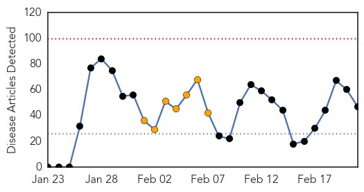
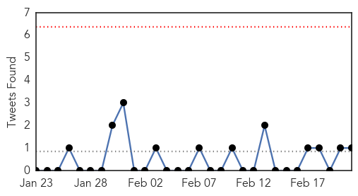
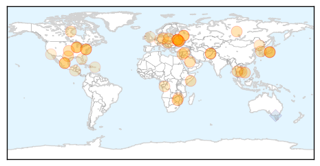
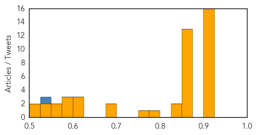
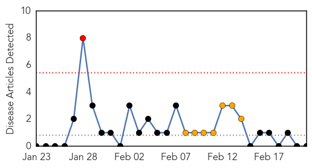
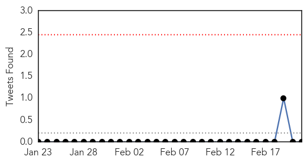

Unknown
30-Day Web Trend
0 alerts, 7 warnings

30-Day Twitter Trend
0 alerts, 0 warnings

Article Locations
Article Confidences
Top Articles:
- 0.917
- Chicago Tribune
- 0.917
- Chicago Tribune
- 0.917
- Chicago Tribune
- 0.917
- Chicago Tribune
- 0.917
- Chicago Tribune
- 0.917
- Chicago Tribune
- 0.917
- Chicago Tribune
- 0.917
- Chicago Tribune
- 0.917
- Chicago Tribune
- 0.917
- Chicago Tribune
- 0.917
- Chicago Tribune
- 0.910
- The world windows to Thailand
- 0.910
- The world windows to Thailand
- 0.910
- The world windows to Thailand
- 0.910
- The world windows to Thailand
- 0.904
- Vietnam bans Chinese poultry as new deadly bird-flu virus strain reaches border
- 0.866
- Venezuela's Maduro calls for dialogue with Obama
- 0.866
- Ukraine deal sets early presidential poll
- 0.866
- Ukraine opposition leaders are at Yanukovich HQ, ready to sign agreement
- 0.866
- Moscow police say 200 detained outside protest trial courthouse
- 0.866
- EU ministers to meet protesters, opposition
- 0.866
- Afghan workers wash bloodstains off a window at the site of a suicide attack in Kabul, Afghanistan
- 0.866
- No Russian decision to release $2 billion for Ukraine
- 0.866
- FACTBOX-Ukraine's external financing needs
- 0.866
- Somali Islamist militants claim deadly palace attack
- 0.866
- Russian gas exports to Europe "pumped in full"
- 0.866
- All-night Ukraine crisis talks "difficult"
- 0.866
- Members of Russian punk band Pussy Riot speak to journalists during the 2014 Sochi Winter Olympics in Adler
- 0.866
- Germany warns Ukraine gov't against sliding back into violence
- 0.848
- North Korea Reports Foot-and-Mouth Outbreak- Daily NK
- 0.825
- Hispanic-Style Cheese Linked to One Death; 3 Infants Hospitalized
- 0.792
- Province slow in responding to pig virus
- 0.770
- Manitoba, Quebec to declare PED reportable
- 0.693
- Yaws eradication will need millions of donated antibiotics, says WHO
- 0.683
- WFP forced to cut aid to food-insecure Zimbabweans
- 0.616
- China reports four more bird flu cases
- 0.611
- How do you weaponize a rabbit?
- 0.610
- Malnutrition could jeopardize Zimbabwe's development, UN official warns during visit
- 0.586
- The Parasite that Escaped Out of Africa
- 0.579
- Sunday Morning News: Rural Student Scholars Get 2-Day Orlando Experience
- 0.577
- Digital media could improve health
- 0.571
- Sorry, deze pagina kon niet gevonden worden.
- 0.559
- Inspirational African visionary
- 0.530
- Malaria control in Africa: progress but still much to do
- 0.529
- PMA concerned over shortage of anti-TB vaccines for infants in country
- 0.507
- Best of the week: Pussy Riot, Harmony Korine and selfies
- 0.504
- domain-b.com : HIV drug used to reverse effects of virus that causes cervical cancer
Top Tweets:
- 0.622
- RT: Flu has been hard on young & middle-age adults this season. Ages 18-64 make up 61% of flu hospitalizations: http://t.co/p…
- 0.547
- Tengo ganas de hacer compra y usualmente eso no pasa üôèüôèüôèüôè
- 0.546
- RT: Miercoles 26 feb a las 7 pm en el 9 piso del Hospital AuxilioMutuo (gratis) Conferencia de lactancia. Dr.Mario htt…
- 0.530
- Flu Fact Friday: The two main differences between the flu and a cold are the duration, severity of the fever, muscle aches and recovery...
MERS
30-Day Web Trend
1 alerts, 7 warnings

30-Day Twitter Trend
0 alerts, 0 warnings

Article Locations

Article Confidences

Top Articles:
-
No articles found for Feb 21, 2014
Top Tweets:
-
No tweets found for Feb 21, 2014